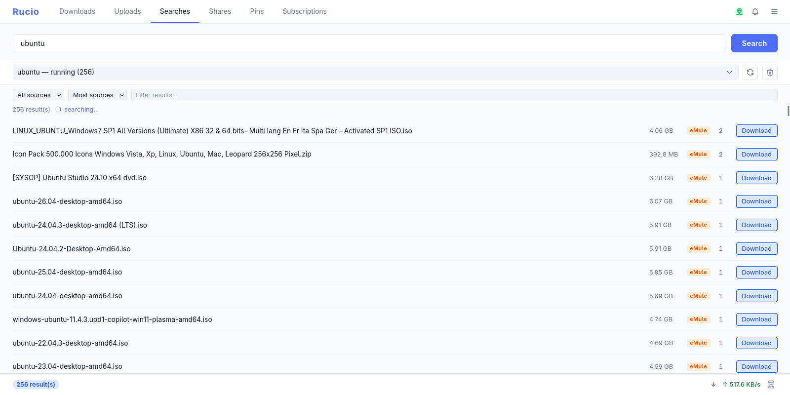
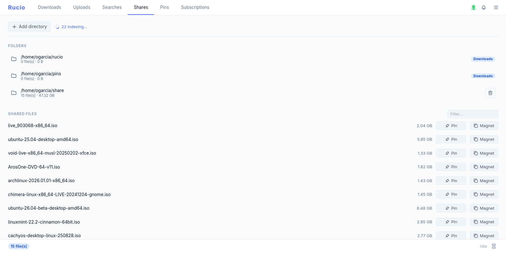
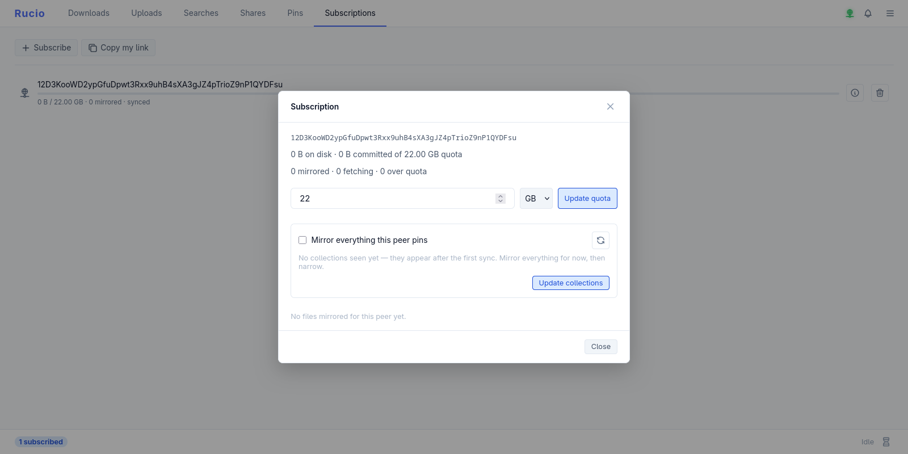
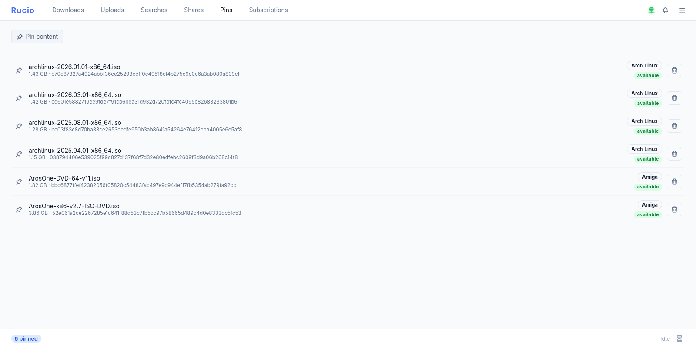

Decentralized peer-to-peer file sharing
Rucio is a file-sharing application written in Rust over libp2p, with eMule/Kad2 compatibility. No trackers, no central servers, no relays — files are found through a distributed hash table and keyword search, and transferred directly between peers.







What it does
Fully decentralized
Peers find each other over mDNS on the local network and a Kademlia DHT on the internet, and search by keyword over Gossipsub. Files then move directly between peers — there are no trackers, no central servers, and no relay nodes carrying your data.
eMule / Kad2 compatible
Rucio bridges to the existing eMule Kad network: keyword search,
source lookup and downloads of ed2k:// links,
including obfuscated connections — all from the same client, side
by side with native Rucio transfers.
Web control panel
Drive searches, downloads, uploads and shares from a clean web UI served by the daemon itself — no extra process, no separate install. Add a folder and every file inside is hashed and announced to the network automatically.
Runs anywhere
One codebase, many shapes: a daemon and CLI for Linux and macOS, a container image for servers, and a portable Windows desktop app you just unzip and run. Interrupted transfers resume where they left off after a restart.
Download
Portable desktop app
No installer and no dependencies — not even the Visual C++
runtime. Unzip and run: config, database and downloads all live
next to the executable, so deleting the folder removes every
trace. Grab the …-windows-x86_64-portable.zip from
the latest release.
Daemon + CLI
A single static binary — rucio for the CLI,
ruciod for the daemon — with the web panel built in
and eMule support included. Prebuilt for x86_64 and ARM64; drop it
on your PATH and you're ready.
Container image
Run the daemon anywhere with the published image. Map port
3003 for the web panel, the P2P and eMule ports so
peers can reach you, and mount a volume to keep your data:
docker run -d --name rucio \
-v rucio-data:/var/lib/rucio \
-p 3003:3003 \
-p 4321:4321 \
-p 4662:4662 -p 4672:4672/udp \
ghcr.io/ogarcia/rucio:latest
Then open http://localhost:3003/ for the panel.
Build it yourself
Rucio is Rust with a Leptos/WASM frontend. Clone the repo and build the daemon and CLI:
git clone https://github.com/ogarcia/rucio
cd rucio
cargo build --release
Add --features emule-compat,web-ui for eMule and the
embedded panel. Full build, config and protocol notes live in the
docs.
On Windows the app is a single self-contained executable. On first run Windows Firewall asks to allow network access; click Allow for full connectivity.